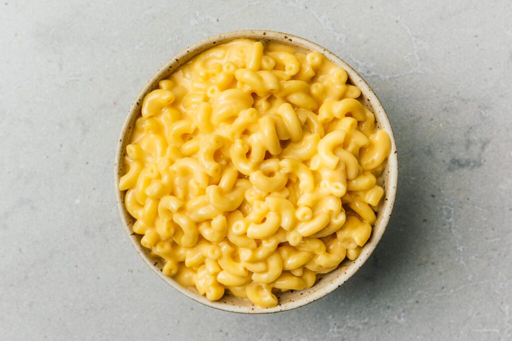

Mac N' Cheese
A comfort food for everyone. Theres nothing more consistent then the good taste of mac n' cheese
Ingredients
- 16 oz elbow macaroni, cooked (or other tubular pasta)
- 1 tbsp extra virgin olive oil
- tbsp unsalted butter
- 1/3 cup all purpose flour
- 3 cups whole milk
- 1 cup heavy whipping cream
- 4 cups sharp cheddar cheese shredded
- 2 cups Gruyere cheese shredded
- salt and pepper to taste
- 1 1/2 cups panko crumbs
- 4 tbsp butter melted
- 1/2 cup Parmesan cheese shredded
1/4 tsp smoked paprika (or regular paprika)